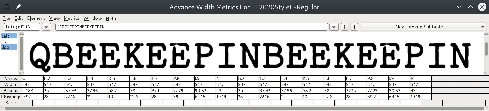

While it would be ideal for the font itself to contain code through which it could create a (near-) infinite number of similar-looking glyphs, that is not possible in an OpenType font.† My first inspiration was FF Duper, a plucky little proprietary font developed by Martin Wenzel in 2009. FF Duper, however, works via hundreds of GSUB subtables; while I tried to follow Wenzel's lead in this regard, I eventually realized that for my font it was not going to be possible; the layout would be far too slow and the GSUB table far too large.
The solution came to me after an IRC chat with my extremely patient friend Skef Iterum (thank you Skef). Instead of large tables and variable numbers of alternate glyphs, acquiesce, and include n (I decided on 9) versions of each glyph, even such glyphs as “space”. Then, define classes @a1 through @a9 which include a list of all glyphs in the font. For example, @a2 begins as:
@a2 = [space.2 exclam.2 quotedbl.2 numbersign.2 dollar.2 percent.2 ampersand.2 quotesingle.2 parenleft.2 parenright.2 asterisk.2plus.2 comma.2 hyphen.2 period.2 slash.2 zero.2 one.2 two.2 three. 2 four.2 five.2 six.2 seven.2 eight.2 nine.2 colon.2 semicolon.2 less.2 equal.2 greater.2 question.2 at.2 A.2 B.2 C.2 D.2 E.2 F.2 G.2 H.2 I.2 J.2 K.2 L.2 M.2 N.2 O.2 P.2 Q.2 …
Having these classes, we can then do this:
feature calt {
And do our layout with a single subtable! This is of course only pseudo-random, but it's, almost all of the time, “good enough,” and with a higher n hereon m it becomes more and more realistic. Perhaps, indeed, only popular glyphs would need have the full number of m versions; “unpopular” glyphs, when a version of index i is requested and i > n, the glyph could simply be a reference to the glyph of index i mod n.
lookup calt1 {
sub @a1 @a1' by @a2;
sub @a2 @a1' by @a3;
sub @a3 @a1' by @a4;
sub @a4 @a1' by @a5;
sub @a5 @a1' by @a6;
sub @a6 @a1' by @a7;
sub @a7 @a1' by @a8;
sub @a8 @a1' by @a9;
} calt1;
} calt;
As it stands though, what we have is good enough for an initial version. The guts of the system only obviously spill out with carefully chosen inputs, e.g.:
QBEEKEEPINBEEKEEPIN

The letters highlighted in red and blue are the same because they are nine characters apart. The computer tokenizes the string to glyph-names as Q B.2 E.3 E.4 K.5 E.6 E.7 P.8 I.9 N B.2 E.3 E.4 K.5 E.6 E.7 P.8 I.9 N.
Each distinct font style is built from a base font and a base SFD; for the regular style, TT.sfd (based on IBM Selectric Pica 10 Pitch), and the italic, TT_ita.sfd (based on IBM Selectric Light Italic 12 Pitch).
† Assuming that one is using one of the commonplace OpenType layout engines of late 2019, such as HarfBuzz.
Content © Fredrick R. Brennan, originally released on 1 January 2020